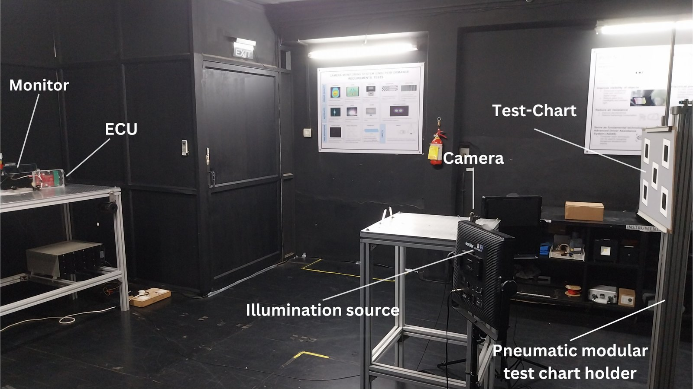
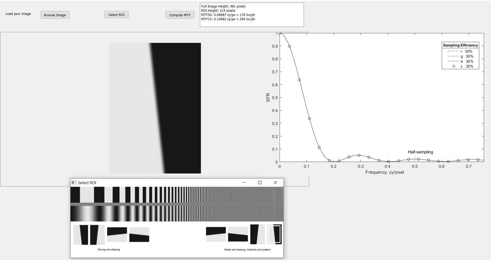
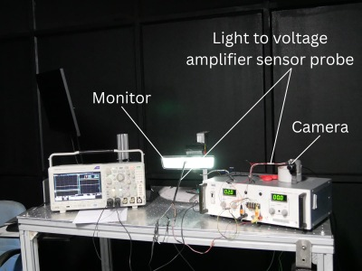

Testing the Cameras That Replace a Car’s Mirrors
A camera monitoring system replaces a vehicle’s rear- and side-view mirrors with cameras and screens. It cuts glare, removes blind spots and reduces drag, and the same cameras can feed driver-assistance systems. Before one goes on the road, it has to pass tests of sharpness, timing and how it shows bright lights.
At the Automotive Research Association of India (ARAI) I helped set up the country’s first facility for these tests, and the third of its kind in the world. It is part of ARAI’s Safety and Homologation Laboratory and tests to ISO 16505, ECE R46 and AIS 001/002 (Rev. 2). I built three of its parts.

Measuring sharpness
I wrote the facility’s image-quality software. It finds a slanted edge on a test chart, measures how much contrast the camera keeps at each spatial frequency, and reports the camera’s resolution. It is written in C++ with OpenCV and Qt5 and reaches 98% accuracy against SFRMAT and MITRE, the industry-standard tools. It handles several chart types, including slanted edges and colour checkers, runs images in batches and writes the certification report itself. Building it in-house saved ARAI ₹7.75 lakh (about $9,000).

Measuring timing
Timing tests turn light into a voltage that an oscilloscope can read. I designed the trans-impedance amplifier for this: a switchable feedback resistance from 1 to 100 kΩ gives three gain stages, and the noise stays under 10 mV peak to peak.

Measuring bright lights
At night, the screen has to show a headlamp as a distinct point of light. I designed a point light source as bright as a headlamp, up to 8×106 cd/m² following the headlamp regulation ECE R112, and automated the analysis: it scans the light’s image horizontally and vertically and measures the point light source detection factor to within 5%.